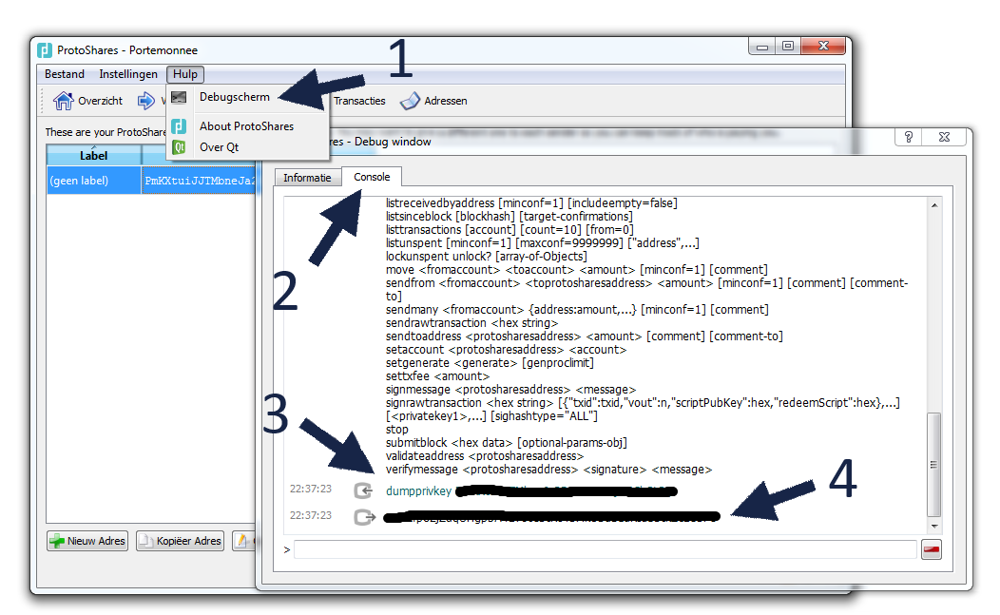

Introduction
ProtoShares owners collectively received a 1% stake in the relaunched
MemoryCoin - MemoryCoin 2.0.
This guide will help you to claim your MMC coins if you had Protoshares (PTS) on an address
you controlled on block 32,000.
You will get 1.0 MMC for every 10 PTS. If your balance was held at an exchange, contact the exchange for details.
Step #1: Dump the Private Key
Start up your Protoshares-Qt client and copy the address on the receive page that held your funds. Go to help, debug window, console, and type:
walletpassphrase <your wallet password> 600
dumpprivkey <your address>

Then copy the private key.
Step #2: Import the Private Key
To redeem the MMC coin, start up the
MemoryCoin-Qt client..
Go to the console like in the the Protoshares client: help - debug window - console. Now type this to import your private key:
importprivkey <the copied private key>
You should now receive your MMC coins. It is recommend that you transfer your balance to a fresh MemoryCoin wallet after import. If you have multiple addresses repeat the process with the other addresses after the coins have been successfully send to the fresh MMC address.